← Back to Projects
08 • Waterfront Destination
Waterfront Lifestyle Center
A refined waterfront destination where hospitality, culture, retail, leisure and the Omani coastline converge through terraces, shade, water and mountain views.
THE COAST AS A JOURNEY
Design Narrative
The waterfront is not a backdrop to the project; it is the route through which the project is discovered.
The center turns the coastline into a sequence of experiences: arrival, promenade, terrace, view and dining. The architecture is not simply on the water; it is shaped by the water.
Layered waterfront promenades, sail-like canopies, shaded courtyards and seamless indoor–outdoor dining.
Waterfront promenadeMarina edgeBoutique retail lanesF&B terracesSail canopiesOmani courtyard atmosphere
Strategic Lens — Waterfront Experience
How can the coastline become a sequence of hospitality, retail and cultural moments rather than a single view?
Layer promenade, terraces and shaded courtyards so every movement reconnects to water.
Dhow-inspired sail canopies, Omani stone, F&B terraces and marina edges create a climate-conscious waterfront identity.
A promenade of shade, dining and horizon views shaped by the Omani coast.
The strongest waterfront destinations turn experience into value without losing public generosity.
Curated Visual Gallery
Waterfront Lifestyle Center
A visual sequence of architecture, atmosphere, movement and detail.

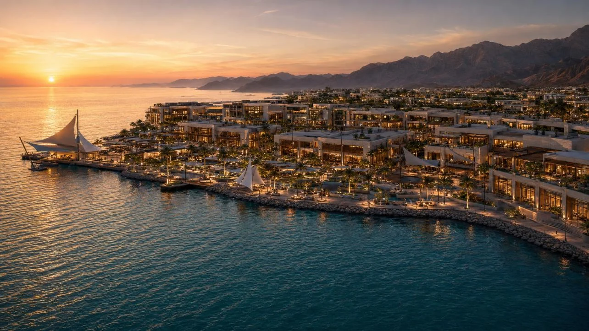
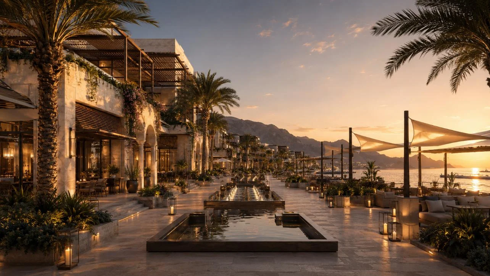
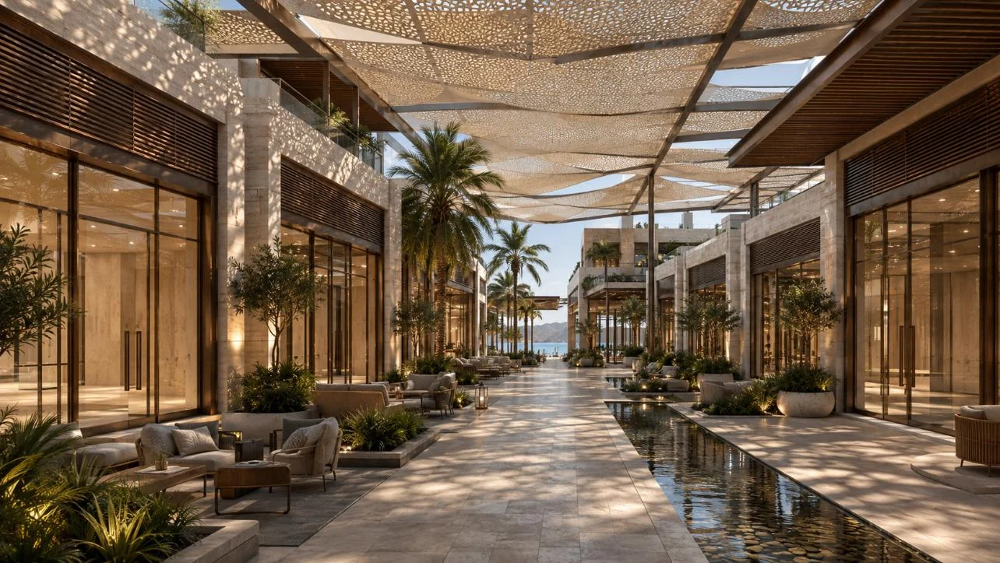
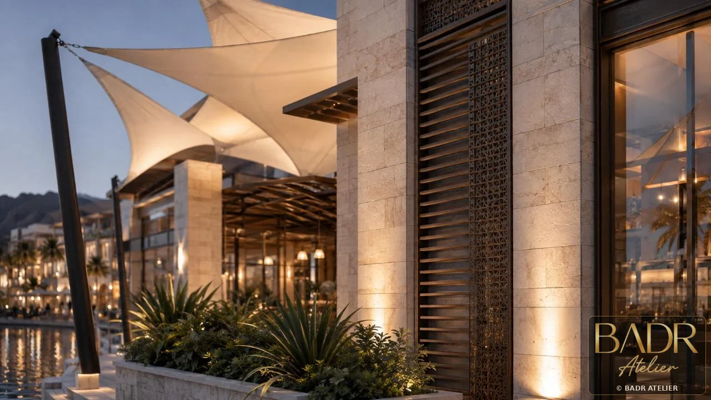
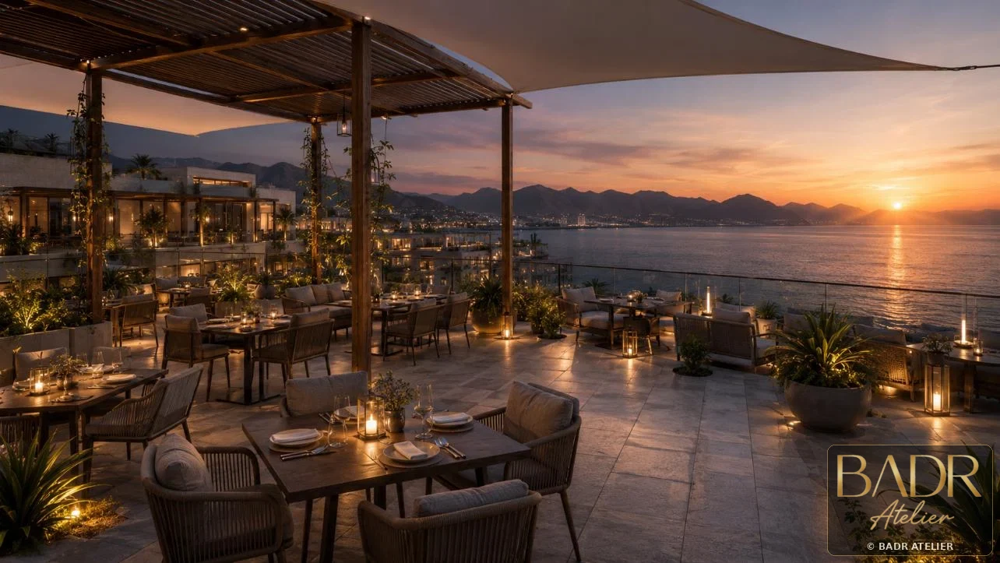
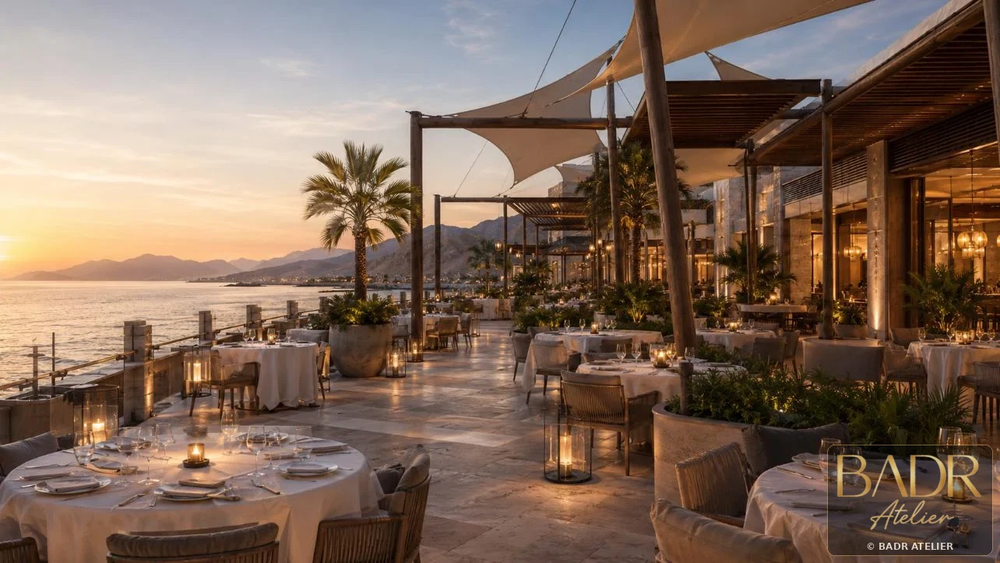
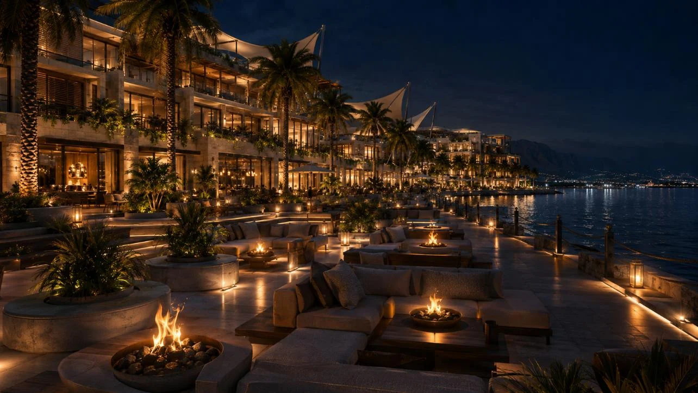
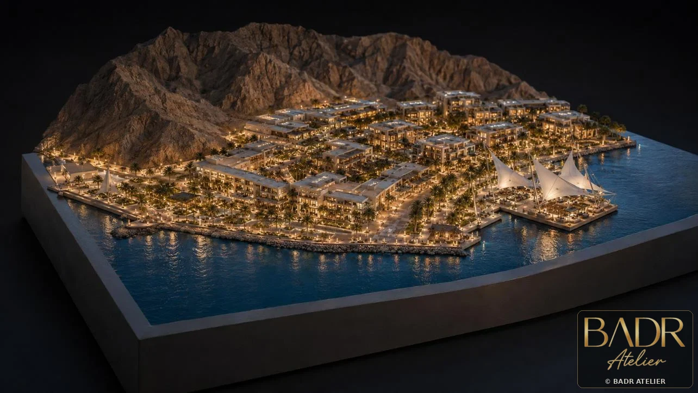
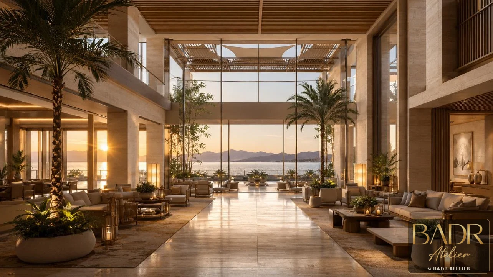
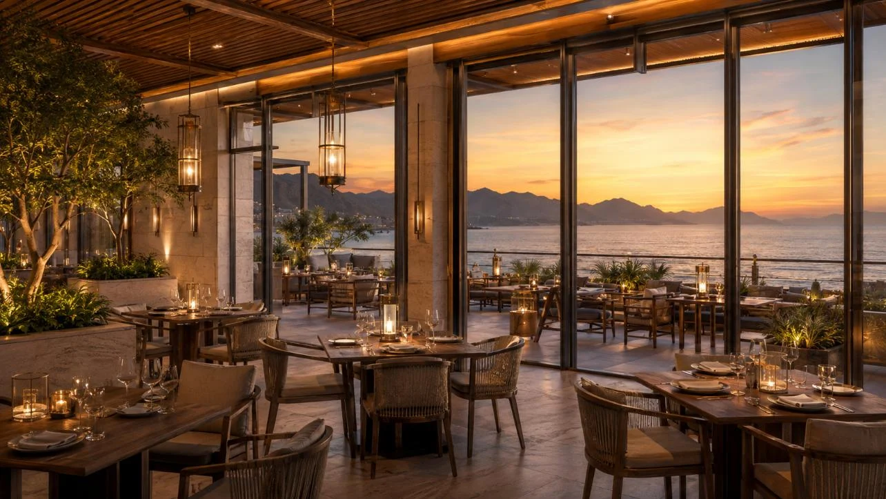
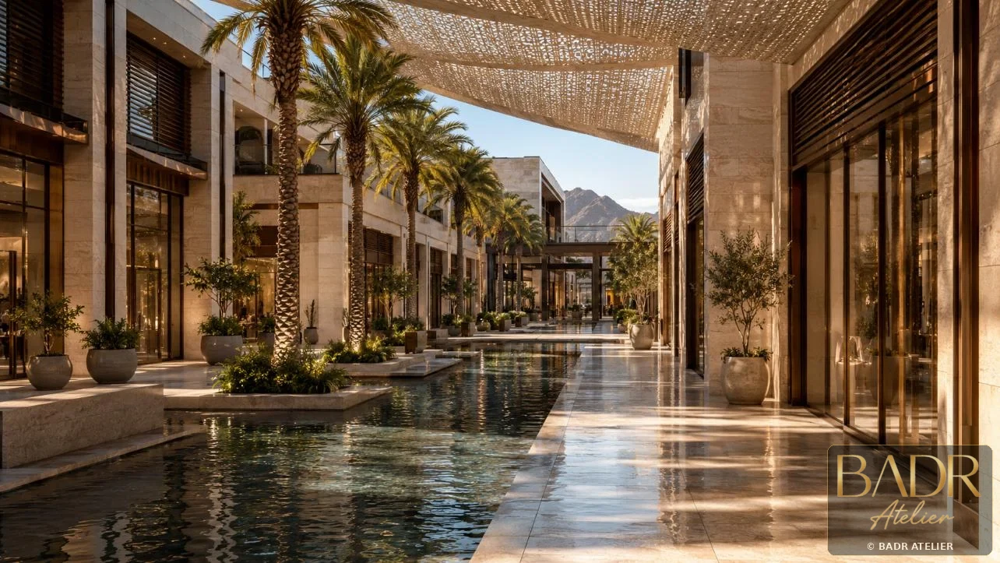
Key Features
- Waterfront promenade
- Marina edge
- Boutique retail lanes
- F&B terraces
- Sail canopies
- Omani courtyard atmosphere
- Sea breeze microclimate
Spaces + Experiences
- Promenade
- F&B terraces
- Retail lanes
- Courtyards
- Marina edge
- Hospitality lounges